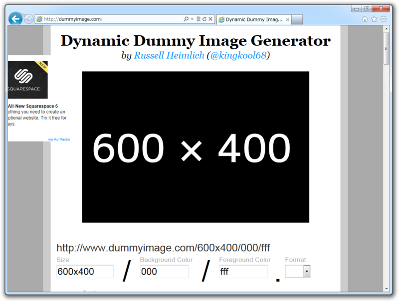
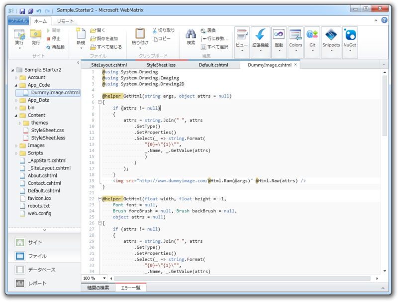
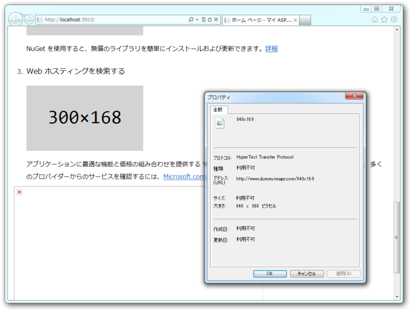
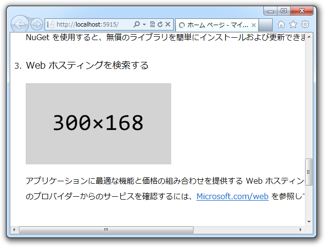
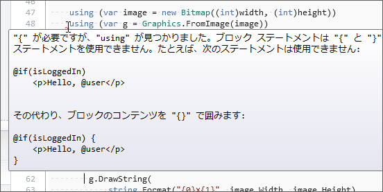

ダミーイメージがもらえなくて激怒したので WebMatrix でスマートに解決してみたけど一部激怒した
公開日：
Web サイトのデザインを考えるとき、ダミーイメージは欠かせないよね。少なくとも、自分はそう。そんな悩める怠惰な子ブタたちのために、 http://dummyimage.com はある。

こいつはパラメータを与えて URL を投げるだけで、いろんなサイズ・色のダミーイメージをじぇねれいと*1してくれるクールなサービスなんだ。
もっとクールに

でも、まさか WebMatrix を使っているおシャレさんのなかに、 <img src="htt... だなんて毎度いちいち手入力してるヤツはいないよな。もちろん、ヘルパーにしておいて自動補完機能に入力させるハズだ。機械でできることを手でやるのはアホのすることだ*2。
#~/App_Code/DummyImage.cshtml@helper GetHtml(string args, object attrs = null) { if (attrs != null) { attrs = string.Join(" ", attrs .GetType() .GetProperties() .Select(_ => string.Format( "{0}="{1}"", _.Name, _.GetValue(attrs) ) ) ); } <img src="http://www.dummyimage.com/@Html.Raw(@args)" @Html.Raw(attrs) /> }
こうやっておけば、
@DummyImage.GetHtml("640x16:9")
と書くだけ*3で、実行時に
<img src="http://www.dummyimage.com/640x16:9" />
のような HTML コードへ展開される。画像タグに alt 属性をつけなければ瞬時に息絶える W3C 原理主義者や、 style を埋め込みたいなんていうわがままさんはこんな感じで書けばいい。
@DummyImage.GetHtml(300, new { alt = "Dummy image", style = "border: 1px red solid;"})
激怒してみた

けれど、世の中うまくいかないものだ。 Web ページを実行してもなかなか画像が表示されない。 dummyimage.com が重過ぎるんだ！（怒
でも、よく考えたらローカルの資源はありあまっているわけで……ダミー画像なんかむしろそっちで作るべきだよね。なんでも Web サービスに頼るのはよくないな。
#~/App_Code/DummyImage.cshtml@using System.Drawing @using System.Drawing.Drawing2D @using System.Drawing.Imaging @using System.Drawing.Text
@helper GetHtml(float width, float height = -1, Font font = null, Brush foreBrush = null, Brush backBrush = null, object attrs = null) { // リフレクションで匿名オブジェクトを HTML 属性にするぜー if (attrs != null) { attrs = string.Join(" ", attrs .GetType() .GetProperties() .Select(_ => string.Format( "{0}="{1}"", _.Name, _.GetValue(attrs) ) ) ); }
// 一応引数のチェック。負数ははじくか 16:9 に整形 if (width <= 0) { throw new ArgumentException("Width must be > 0"); } height = height > 0 ? height : width * 9 / 16;
// ここから画像生成。さいごに BASE64 に変換してタグに埋め込む var image = new Bitmap((int)width, (int)height); var base64 = string.Empty;
using (var g = Graphics.FromImage(image)) { // おまえのパワー、あまってんだろ？ 品質最高にしてやんぜー g.SmoothingMode = SmoothingMode.HighQuality; g.PixelOffsetMode = PixelOffsetMode.HighQuality; g.TextRenderingHint = TextRenderingHint.AntiAlias;
// 背景塗りつぶすぜー g.FillRectangle( backBrush ?? Brushes.LightGray, 0, 0, width, height);
// どまんなかにテキスト書くぜー var format = new StringFormat(); format.Alignment = StringAlignment.Center; format.LineAlignment = StringAlignment.Center;
g.DrawString( string.Format("{0}×{1}", image.Width, image.Height), font ?? new Font("Consolas", 36, FontStyle.Regular), foreBrush ?? Brushes.Black, new RectangleF(0, 0, width, height), format ); }
// 画像バイナリをテキスト（BASE64）に変換するぜー using (var stream = new System.IO.MemoryStream()) { image.Save(stream, ImageFormat.Png); base64 = Convert.ToBase64String(stream.ToArray()); }
// HTML タグとして出力されるぜー <img src="data:image/png;base64,@Html.Raw(@base64)" @Html.Raw(attrs) /> }

一見長いけど、やってることは FillRect() と DrawImage() 、BASE64 変換だけだよ。
みんな ImageMagick 好きだけど、わしは .NET Framework の方が慣れていていいや。なぜか動かなくて悩んだりせずに済むしな*4。
おまけ激怒

Razor の制限とはいえ…… using をネストしなければならないのは泣ける！（怒
まぁ、あとで画像生成部分を @functions に切り出せばよいかな。
気が向いたらこいつは NuGet にしておきたいけれど、ダミーテキストを作るヘルパーもほしくなってきたね……なにかおもしろことできないかな。